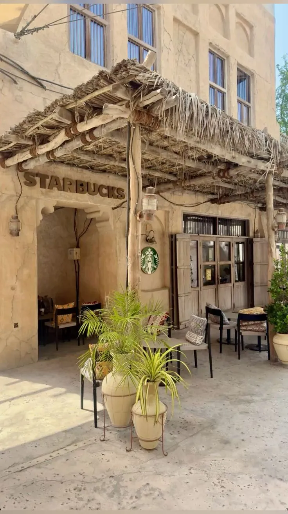

COFFEE • CULTURE • COMMUNITY
Dubai has become one of the Middle East's leading coffee destinations, combining global coffee trends with local hospitality and creative culture.
Over the last decade, Dubai has developed a thriving coffee scene. International brands, specialty roasters and independent cafes have transformed the city into a destination for coffee enthusiasts, entrepreneurs and remote workers.
Some of Dubai's best coffee experiences can be found in:
• Downtown Dubai
• Dubai Marina
• Business Bay
• Jumeirah
• Al Quoz
• Palm Jumeirah
Specialty coffee shops focus on bean quality, roasting techniques and brewing precision.
Popular methods include:
• Espresso
• Pour-over
• Cold brew
• AeroPress
• Filter coffee
Independent coffee shops continue to grow across Dubai, creating unique spaces where design, creativity and community come together.
Many cafes host events, networking sessions and creative workshops.
Dubai's coffee culture is closely connected to its entrepreneurial ecosystem.
Many venues provide:
• High-speed Wi-Fi
• Comfortable seating
• Power outlets
• Quiet workspaces
• Business-friendly environments
Dubai Marina and Palm Jumeirah offer some of the city's most scenic coffee spots with waterfront views and outdoor terraces.
Morning hours remain the most popular for coffee lovers, while evenings attract professionals, entrepreneurs and social gatherings.
Dubai's coffee scene reflects the city's international character, entrepreneurial spirit and commitment to quality experiences. Whether you're searching for specialty coffee, a productive workspace or a quiet corner to relax, Dubai offers coffee destinations for every taste.